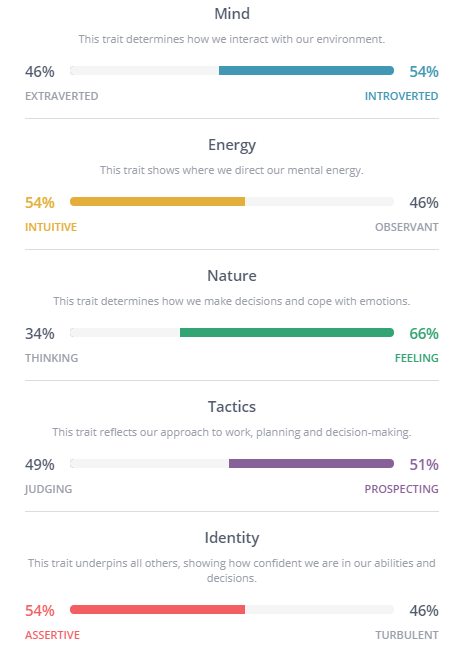
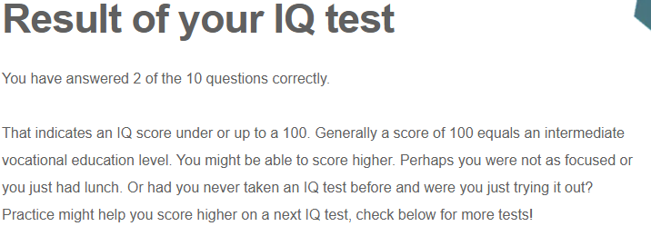

My Interest in IT is in becoming an IT professional with also working in different
areas such as Software development, Project Design, Project Management, Creative design.
My interest in IT started when I was in year 4-5 as in that time, we had a school
computer known as compost, many times I used it I felt the interest in going deeper to learning more about this software.
When I entered year 7 our high school gave us our laptops. With this I started learning
more and being able to learn through programs and being able to do assessments,
written tasks, etc.
My deeper interest grew when I was in year 9, I started
having a subject called Information Computer Technology. This subject became attractive
to learn. I had days when the teacher introduced my class to more about Python and how we
use it, we started to eventually work through python developing our skills.
I’ve also done Creative IT
in this compartment we learned more about the use of Photoshop and how we access it through detailing, moving.
Through this software in this subject I decided to do further IT subjects to expand more about knowledge upon being in these compartments.
I started doing year 10 and I’ve picked two IT subjects the first one was known as 2D Game development this was the subject where I found
struggles in from being able to embed scripts and numerals towards the created games. My second IT subject was Creative IT again as I felt more attached towards this topic,
I wanted to learn more about the photoshop program with also being accessible towards using it, I have seen the world is more prone to use Technology which I wanted to give an expansion
towards my skills while also teaching others about IT.
I became more interested in studying IT by high school friends as they gave me a sense of
direction as to where to go, though when the time had passed, I received my more interesting
capacity towards my friend called Samuel, he is a University Student here at RMIT he engaged
me to study here to improve my computing skills and expand from there, so I took that
experience from Samuel and I also wanted to imply more learning towards it.
I chose to become a Student here at RMIT because I took the advice that my friend
Samuel had given me as he explained more about what he does in these topics,
he showed me the interests he had which gave me more confidence to join RMIT and become a
Student while enhancing my Learning skills and improving on my previous skills.
I was interested in gaining more experience and felt that I could grow more into the
experience in IT topic, during my time learning about IT I felt that it was a good way to
start gaining more knowledge about as we will always improve our systems in IT as humans.
The IT topic became interesting to me because of the ways people had interests and how they
applied them into their lives and gaining their constancy with working with peers and people
around society.
I also started to do my personal development, I mostly worked around building
basic games as I wanted to experience how you would build and how it works, I then began to
watch more Youtube videos about the building experience while also watching more of other
people’s experience I was able to finish the building map that I was doing, I felt that
when you listen to the troubles other people had and you had a solution towards the problem
It would be easier for the fix. That’s how I become more closer to my interests and decided
to become a student here at RMIT.
During my studies, I learned to a lot about introducing us to the Back-End system,
from there I got to know more things and I was able to introduce the activities that
I have done and type them into the forum, this helped a lot because I also was able to
see other people’s responses and get new ideas from working through. The other part about
it that I enjoyed was also getting new ideas about planning and setting myself a foundation
that start’s fresh then grows, I’ve also joined the meetings and gathered the teacher's
explanation a bit more clearly.
During this, I expect to learn more about the functions
of IT which is what we're doing and gave me a far more level of interest to read through
responses and also join other class meetings and see how they also set their standards
which gave me another way to think more about the topics I do for this topic. My other
expectation is that we get to learn more about how the system will take place which hopefully will get
easier to understand.
This position provides technical support upon computer installers or buyers it provides a way that the business will proceed smoothly, while also being tasked to maintain systems with configuring hardware technical issues. This position is appealing to me because it’s something in my area of interest as I like to work for IT Support giving people the help with issues relating to the Job while also making the sure the company will run at a good pace. This position is appealing to me because of how it is run and how the position gives interest to people who like this job. The main skills used for this job is configuring software’s, that is the key principle in working in this Job. The purpose of this is to configure networks, scanners etc. The qualifications for this job entitle you to be calm and patient as some days you will be working in stressful situations, good communication skills must be on rise as you will have to explain the issues of the concept the person is dealing with. Speaking is another factor that you will need to cultivate as your language must be provided easy to understand so the person will get his information and what he can do to solve the issue instead of using jargon. Knowledge of computer systems is essential to acknowledge as you will be tasked to comprehend some issues that arise and the solutions to said problems. You are also tasked to work through problems when things get stressful you would need to maintain a healthy arrangement to work through calmly. Your focus must be at a good pace as you will have to listen clearly to all of what your client is saying because that is your desire to help her to fix her issues. The experiences you will need from working in IT support are the factors that consist of a technical process of thinking and an ability to stick through current deadlines, a good eye used for collaboration to solve the equal-vent problems, a logical through process to delegate and mauver around its environment. The skills I have for this job are, Compressive in though delegations and stressfulness, I have the skills required to solve items that will need fixing. The qualification that I have for IT Support are patience I am durable to be expected to be calm when the client is asking questions or is stuck, I am able to work through that expectancy. I have knowledge of computer systems but not quiet all the systems, I have a clear consistent desire to help the person go through her day without any problems of cause. The experience I currently have is the ability to take first priority and have clear management, with also have having a clear eye to delegate the time to solving the matter of cause. My plan to delegate the missing objectives for this job is for me to exercise upon my skills and areas of improvements that I would enhance more knowledge upon more efficient needs, I will need to work on my communication as that would be an area that I will have to face when working on this appointed job. I will need to work on my ability to not delay on strict deadlines but work on them sooner and take priority in the matter first.
The results mean to me that I got more improvement to take place upon the causes and situations that may happen. I think these results influence my behaviour in a team by showing distinguishments of whether mood outlet fits the material things. I should take this seriously because as a team it’s important to work as a whole be vigilant towards one another arranging that we all have the idea to succeed from our skills as a whole.
These results mean to me that I will need an area of improvement gaining more experience of conducting more skills that determine more identity focus behaviour even on feelings typical behaviour. These influence the behaviour sin a team as you will be carrying these typical behaviours within jobs and out of jobs knowing that it will be a conduction of both. I should always consider taking these in account due to it’s perspective and the natural objectives of this prospect.
The result mean to me that I need to improve on my logistic skills and improve these questions taking place upon the equality of the education level. These results influence poor team behaviour in a certain degree as logic must be up instead of a degree that is stationed down wards. I will have to improve on my logistic skills and then get a person who will be known to do these in an account.
Developing a game using Unity:
The IT innovations that I would like to see, and view is the Developing style of a game using Unity, as I had experience constructing a game using unity in my 2D game development class this would be needed to make the Job objective easier because you will be needing to be constructive upon the tools you will need in the job. The experiences that will make you qualified for the job are to begin with thought process as because with this software it will allow you to enhance your thinking with also bringing good coordination, on top that you will have a good enjoyment unto you and that will also help you to enjoy your Job, though that will be done in the free time. This will also give you the ability to give a clear eye that you may focus on the objective and making you concentrate onto the task that is apprehended, you will also get the ability to delegate as you can take trust on the person you’re working with if you’re doing the project with someone, this will also benefit your working pace.
This project idea is important because you will engage in allot of skills and grow from these skills and have more experience in different software as in an IT Support worker you entitle to work with different unit of software making you get more interests and experience’s while working. Your interest will start to grow from doing a project in Unity because developing a game will give you the stability of being calm, it will give you the time you need to relax from the job and being able to concentrate more upon the doings. When I had 2D game development it gave me a sense of knowledge when working through this area because it will grow your building skills and will increase when you have new interests arising, it will also affect others by joining in and you also giving advice to them to also enjoy themselves away to develop their communications skills so when you invite them you can work together and set out for a group Project as that will benefit in the job in IT Support.
There are also other sceptres of Unity as you can also work in team building, being in a management group or you can set your skills alone. Unity provides you experience in scripting, animation, session management, these compartments are needed for when working in jobs as IT Support, they engage you in having different experiences with working with people or by yourself. Unity gives you interesting concepts to improve your programming skills that will be needed in jobs as some jobs will need you to gather data or etc...
Unity gives you acknowledgment of setting out relevant concepts to you that will improve other areas of your IT lifestyle. You will also have the sense of direction that will you to better planning, it may lead you to plan ahead and be ready to submit on assessments on time, it is also a great way to improve the chances of you learning physics and particle systems. The benefits you get from using Unity are the easy levels of the skills infostructure it gives you chances to 2D and 3D scenes these will inspire you to conduct more activities using Unity and enhance your working skills. In certain jobs like IT Support, you will need great documentation, unity provides you to learn documentation accessibly to learn without a disagreement but also to increase your knowledge when doing other good activities.
Unity is a combination of watching a series and a number of videos showing you how to engage yourself in brining up more scripts, that is a great way to learn in the occasions of working through data documentation and through software compartments. Unity brings you to have logic that will lead you to qualified jobs like IT Support that engages through good thought process. Syntax is also an available asset to improve on throughout the course of learning Unity it will help you to get far in the journey of fixing mistakes etc, though to learn unity it can take up to six months, but it is a good management to improve on the skills they teach basic to high. Learning JavaScript will boost up your moral into the working space of mastering through the Unity process, Kickstart is also another learning resource that Is created to bring you more learning capabilities to your side. Unity also runs through engines as with also in IT support running through different software sectors is eligible to know without the use of support there won’t be a way to get through the understanding process of the interior outlook there you’re trying to set out on your principle of unity.
A factor that moves unity is also through the advertising as another factor that big game companies look through unity is that the big fortnight company uses unity for it’s easy works of teaching your able to excessively attach to this software and handle it out from that way. Unity also provides you with a very good starter agreeable tool, but it does have a very low entry level, but it does bring up the dispute to boost up your principle in learning. You can easily create apps within Android, IOS, and with windows makes the journey easier, you also will improve your visualization side aspect of things around your job including IT Support it engages you to be in contact on things which makes it a good way to fathom your skills. Though Unity is not the software development app, but it brings you good storage of information and skills you can take to job, providing basic numerals to data perception making it very easy for you to set-up. Developers such as business management directors etc in cases would use unity because it’s engine makes it really simple to combine simple management tools, even encouraging you to level up the interior design of your projects.